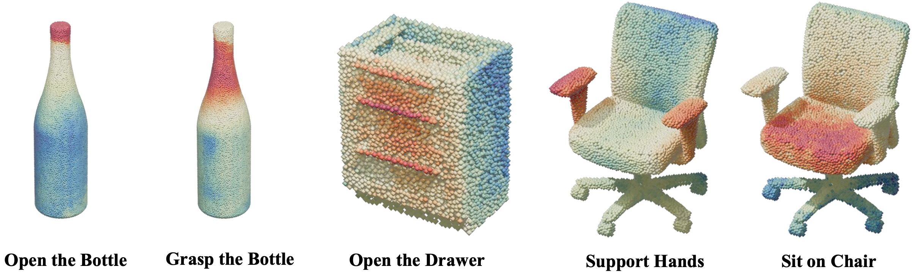
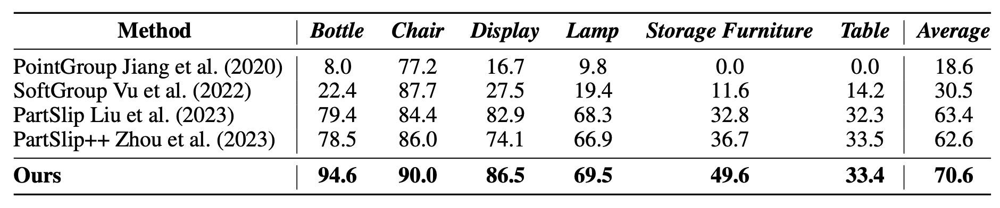
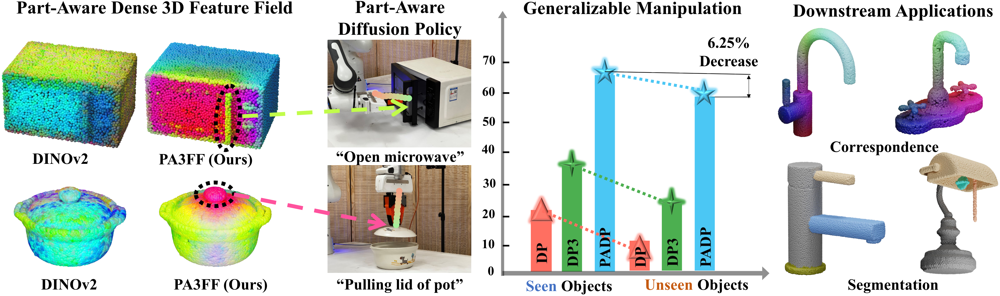
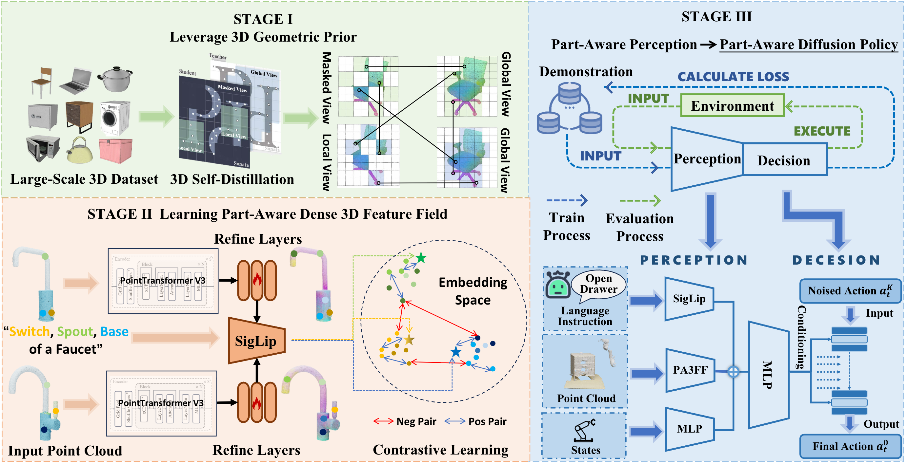
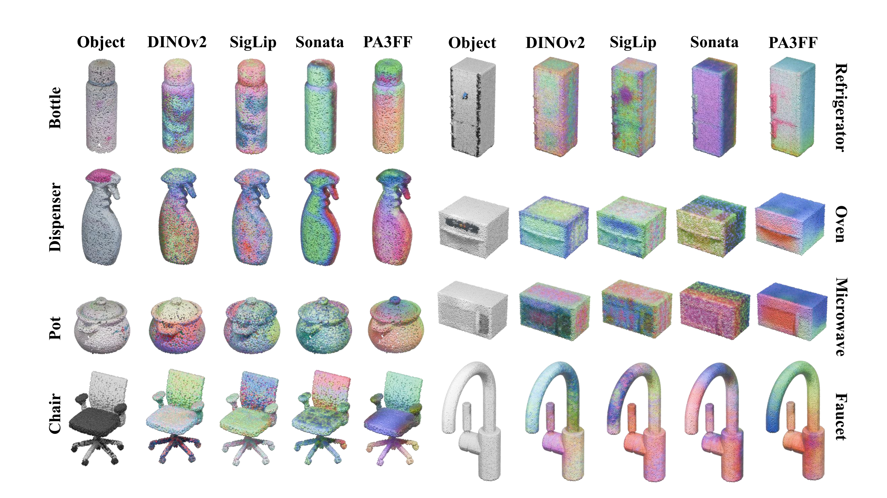
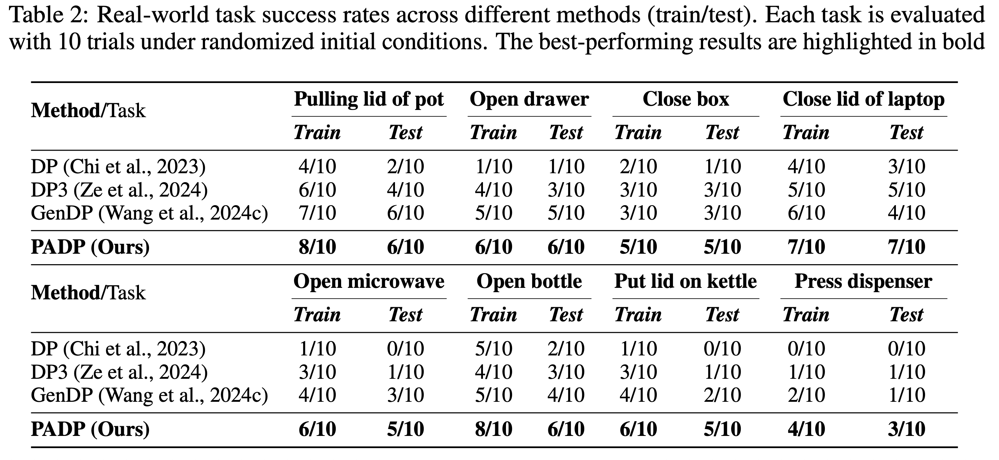
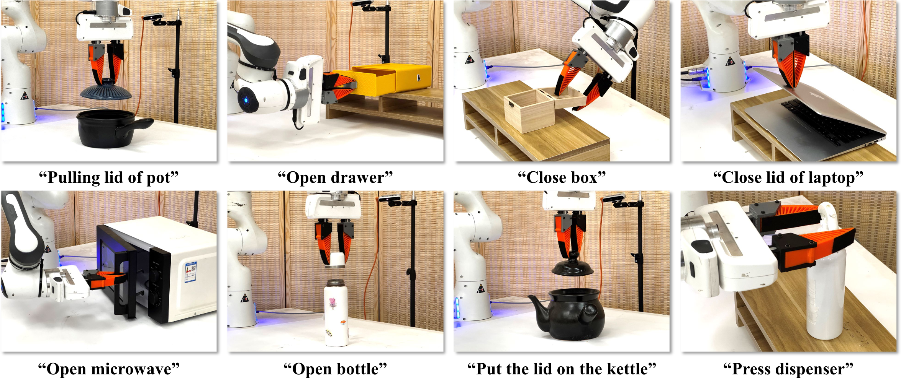

Downstream Applications



Articulated object manipulation is essential for real-world robotic tasks, yet generalizing across diverse objects remains challenging. The key lies in understanding functional parts (e.g., handles, knobs) that indicate where and how to manipulate across diverse categories and shapes.
Previous approaches using 2D foundation features face critical limitations when lifted to 3D: long runtimes, multi-view inconsistencies, and low spatial resolution with insufficient geometric information.
We propose Part-Aware 3D Feature Field (PA3FF), a novel dense 3D representation with part awareness for generalizable manipulation. PA3FF is trained via contrastive learning on 3D part proposals from large-scale datasets. Given point clouds as input, it predicts continuous 3D feature fields in a feedforward manner, where feature proximity reflects functional part relationships.
Building on PA3FF, we introduce Part-Aware Diffusion Policy (PADP) for enhanced sample efficiency and generalization. PADP significantly outperforms existing 2D and 3D representations (CLIP, DINOv2, Grounded-SAM), achieving state-of-the-art performance on both simulated and real-world tasks.

Key Contributions:

Directly processes point clouds, avoiding the inconsistencies of 2D multi-view lifting.
Predicts continuous per-point features that capture fine-grained geometric details.
Single feedforward pass for fast inference, suitable for real-time robotic control.


PADP achieves a 58.8% success rate on unseen objects, outperforming the best baseline (GenDP) by +23.8%, effectively bridging the sim-to-real gap.
PADP achieves 28.8% average success rate, outperforming GenDP (19.4%) by a significant margin (+9.4%). It demonstrates superior robustness on Novel Object Categories (OC), validating the generalization capability of our part-aware features.
| OS | Object States (Pose/Rotation) |
| OI | Object Instances (Same Category) |
| TP | Task Parts (New Parts) |
| TC | Task Categories (New Tasks) |
| OC | Object Categories (Unseen Class) |
Feature refinement via contrastive learning provides the largest performance gain (+16%), confirming that our part-aware representation learning is the critical component for success.


